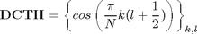
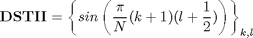
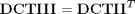
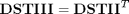
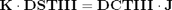
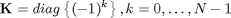
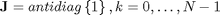
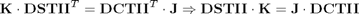

Calculation of DCT_II using DST_II
Contents
Definitions
Result of transform is y=x*T, where y, x are row-vectors T is transform matrix
DCT_II matrix definition

N=8; DCT2=cos(pi/N*(0:N-1)'*((0:N-1)+1/2))
DCT2 =
1.0000 1.0000 1.0000 1.0000 1.0000 1.0000 1.0000 1.0000
0.9808 0.8315 0.5556 0.1951 -0.1951 -0.5556 -0.8315 -0.9808
0.9239 0.3827 -0.3827 -0.9239 -0.9239 -0.3827 0.3827 0.9239
0.8315 -0.1951 -0.9808 -0.5556 0.5556 0.9808 0.1951 -0.8315
0.7071 -0.7071 -0.7071 0.7071 0.7071 -0.7071 -0.7071 0.7071
0.5556 -0.9808 0.1951 0.8315 -0.8315 -0.1951 0.9808 -0.5556
0.3827 -0.9239 0.9239 -0.3827 -0.3827 0.9239 -0.9239 0.3827
0.1951 -0.5556 0.8315 -0.9808 0.9808 -0.8315 0.5556 -0.1951
DST_II matrix definition

DST2=sin(pi/N*((0:N-1)+1)'*((0:N-1)+1/2))
DST2 =
0.1951 0.5556 0.8315 0.9808 0.9808 0.8315 0.5556 0.1951
0.3827 0.9239 0.9239 0.3827 -0.3827 -0.9239 -0.9239 -0.3827
0.5556 0.9808 0.1951 -0.8315 -0.8315 0.1951 0.9808 0.5556
0.7071 0.7071 -0.7071 -0.7071 0.7071 0.7071 -0.7071 -0.7071
0.8315 0.1951 -0.9808 0.5556 0.5556 -0.9808 0.1951 0.8315
0.9239 -0.3827 -0.3827 0.9239 -0.9239 0.3827 0.3827 -0.9239
0.9808 -0.8315 0.5556 -0.1951 -0.1951 0.5556 -0.8315 0.9808
1.0000 -1.0000 1.0000 -1.0000 1.0000 -1.0000 1.0000 -1.0000
Finding relations
We will use transposition relations

and

for substituting DST_III and DCT_III trnasform matrices in dual transform relation

where


Applying relation between DCT_III and DCT_II matrix
After substitution we will get

K=diag((-1).^(0:N-1)); J=rot90(eye(N));
Check expression of DCT_II through DST_II
Check DCTII matrix
J*DST2*K
ans =
1.0000 1.0000 1.0000 1.0000 1.0000 1.0000 1.0000 1.0000
0.9808 0.8315 0.5556 0.1951 -0.1951 -0.5556 -0.8315 -0.9808
0.9239 0.3827 -0.3827 -0.9239 -0.9239 -0.3827 0.3827 0.9239
0.8315 -0.1951 -0.9808 -0.5556 0.5556 0.9808 0.1951 -0.8315
0.7071 -0.7071 -0.7071 0.7071 0.7071 -0.7071 -0.7071 0.7071
0.5556 -0.9808 0.1951 0.8315 -0.8315 -0.1951 0.9808 -0.5556
0.3827 -0.9239 0.9239 -0.3827 -0.3827 0.9239 -0.9239 0.3827
0.1951 -0.5556 0.8315 -0.9808 0.9808 -0.8315 0.5556 -0.1951
Check computation of DCTII transform
x=randn(1,N) y=x*DCT2 % true result y1=x*J*DST2*K % compute DCTII using DSTII transform
x =
1.0668 0.0593 -0.0956 -0.8323 0.2944 -1.3362 0.7143 1.6236
y =
0.4004 0.7822 3.4937 -1.1394 3.3193 -0.3834 -0.4581 2.5195
y1 =
0.4004 0.7822 3.4937 -1.1394 3.3193 -0.3834 -0.4581 2.5195
Check expression of DST_II through DCT_II
J*DCT2*K
ans =
0.1951 0.5556 0.8315 0.9808 0.9808 0.8315 0.5556 0.1951
0.3827 0.9239 0.9239 0.3827 -0.3827 -0.9239 -0.9239 -0.3827
0.5556 0.9808 0.1951 -0.8315 -0.8315 0.1951 0.9808 0.5556
0.7071 0.7071 -0.7071 -0.7071 0.7071 0.7071 -0.7071 -0.7071
0.8315 0.1951 -0.9808 0.5556 0.5556 -0.9808 0.1951 0.8315
0.9239 -0.3827 -0.3827 0.9239 -0.9239 0.3827 0.3827 -0.9239
0.9808 -0.8315 0.5556 -0.1951 -0.1951 0.5556 -0.8315 0.9808
1.0000 -1.0000 1.0000 -1.0000 1.0000 -1.0000 1.0000 -1.0000
Check computation of DSTII transform
y=x*DST2 % true result y1=x*J*DCT2*K % compute DSTII using DCTII transform
y =
0.9236 -1.6837 3.7547 -1.0968 3.3968 -1.8018 1.6084 1.2772
y1 =
0.9236 -1.6837 3.7547 -1.0968 3.3968 -1.8018 1.6084 1.2772
Reference
[1] Markus Pueschel, Jose M.F. Moura. The Algebraic Approach to the Discrete Cosine and Sine Transforms and their Fast Algorithms SIAM Journal of Computing 2003, Vol. 32, No. 5, pp. 1280-1316.